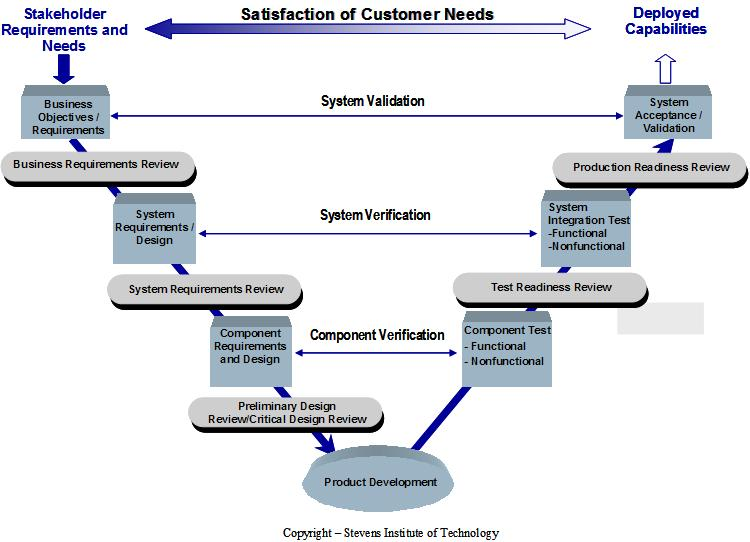
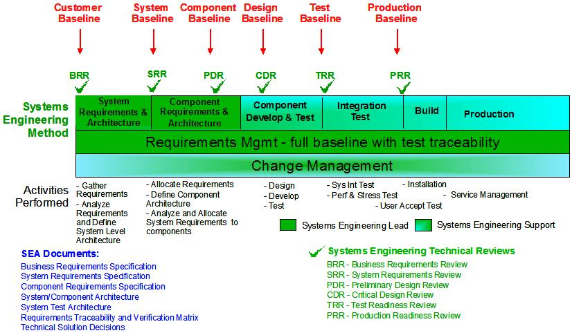
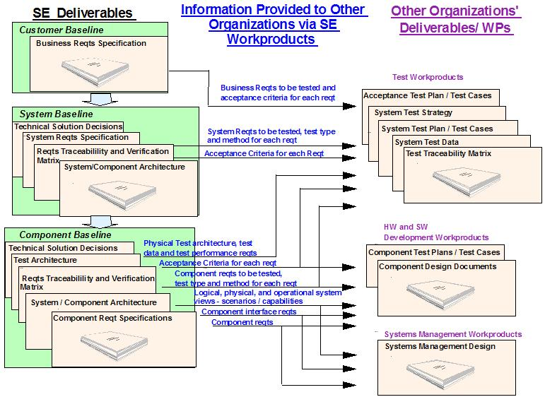
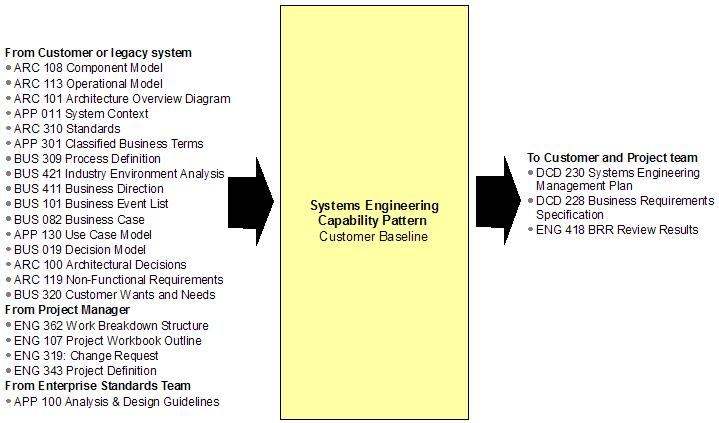
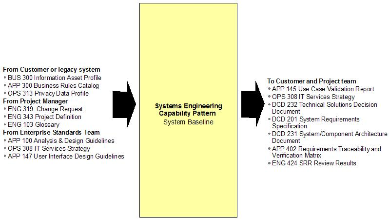
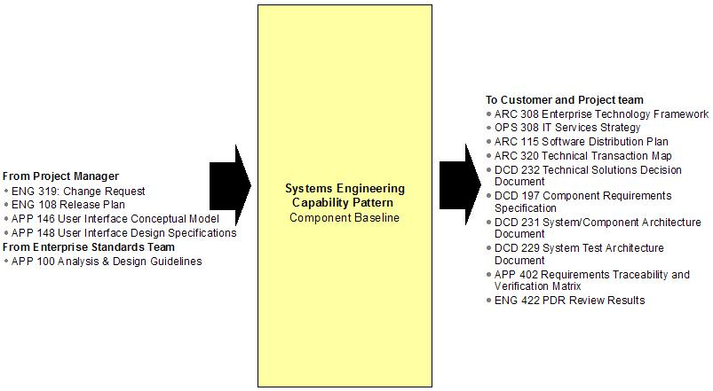
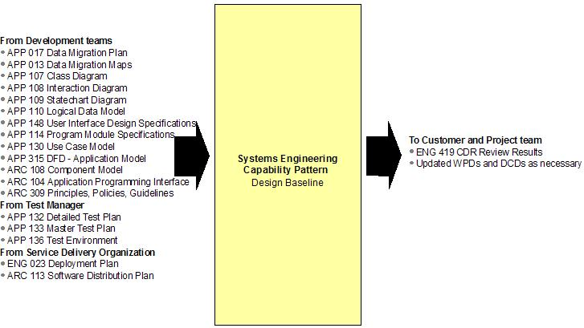
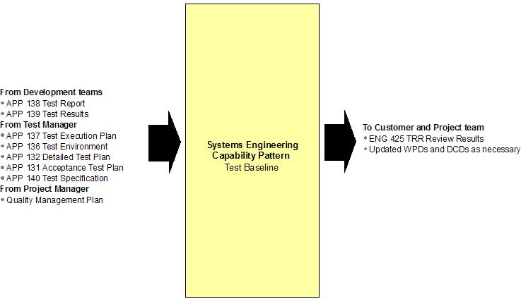
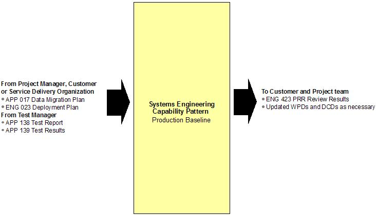

The Systems Engineering Practice provides a proven, disciplined, tailorable, life-cycle process to develop and
manage the technical solution for a project. The practice can be used to enhance an UMF Delivery Process to
provide a set of technical baselines that will enable the project team to effectively define and control the
project scope. The figure below depicts a high-level overview of the Systems Engineering process. It shows how the
process flows from the customer requirements or expectations to product development, and then how the developed
product is verified and validated to produce a deployed set of functionality or capabilities.

The practitioner should integrate this model with an engagement model when a project is large, complex, or has need
for a strong technical baseline. The Systems Engineering practice supports the SEI CMMI process and provides a
strong technical baseline to reduce project risk and thus increase the probability of project success.
The Systems Engineering practice provides a set of technical baselines. Each baseline is built upon the
previous one and provides further refinement to the previous baseline. The technical baselines start at the
beginning of a project with the customer baseline and end at project completion with the production baseline.
Throughout the project, the Systems Engineer must control changes to the technical baselines. The technical
baselines include the requirements documentation and the design/architecture documentation. The change management
process defined by the Project Manager (PM) for the project must be followed for all changes to the technical
baselines.
The capability pattern and the technical baselines can be combined or tailored to fit the project needs. For more
information, see the section below on “Tailoring the practice”.
As with all practices, there are external inputs (work products) to the practice that must be provided from the
base delivery process and there are work products and deliverables that are created by the capability pattern that
will be used as inputs to the base engagement model. When integrating the Systems Engineering practice with a
delivery process, it is vital to make sure that the inputs and outputs between the practice and the delivery
process are in synch. While it is optimal if the input/output work products and deliverables exactly match, this is
not essential. It is essential that the necessary information within the input work product is created by the
output work product; it is not essential that the exact work product is provided as input. Thus, when there is a
‘mismatch’ of input / output work products between the practice and the delivery process, the practitioner must
determine whether the information needed as input (by the practice or the delivery process) is actually provided by
another work project that is output (by either the delivery process or the practice). For example, the Systems
Engineering practice has APP 130 Use Case Model as an input from the customer for the definition of the
business functional requirements. The customer may provide the business functional requirements in an alternate
form. But in either case, business functional requirements are needed as an input to the practice.
Integrating the practice with Delivery Process
The Systems Engineering practice focuses on the six technical baselines that are created. The six baselines are:
-
Customer Baseline
-
System Baseline
-
Component Baseline
-
Design Baseline
-
Test Baseline
-
Production Baseline
When integrating the Systems Engineering practice with delivery processes, the first step is to determine which
baselines are applicable to the project. Some baselines may be not needed; for example, the Test Baseline may not
be applicable if the project does not include a system, integration, performance, or acceptance test that is
separate from the component test. An example of such a project could be a minor functional upgrade to a single
application. Other baselines may be combined due to schedule issues and/or lack of system complexity. In all cases,
it is important to verify that the necessary baseline information is captured in some form.
These baselines are shown in the figure below. Baseline details and tailoring guidelines are also provided.

Of the six baselines, three of them are created by the Systems Engineering team or the customer to provide the
technical solution details to the development, test and Service Management teams. These baselines provide the
business, system, and component requirements for the project.
These baselines are 1) the Customer Baseline, 2) the System Baseline, and 3) the Component Baseline. As shown in
the figure below, these baselines provide the development, test, and service management teams with the requirements
to enable the teams to effectively build and test the system. Also, the project’s technical baseline has been
defined such that the project manager can effectively manage the project.

The other three baselines, the Design Baseline, the Test Baseline, and the Production Baseline, are created by the
development organizations, the test organizations, and project manager. These baselines describe how these
organizations will implement (or have implemented) the requirements that were created by the first three baselines.
External Inputs/Outputs by baseline – the following diagrams show the expected external inputs and outputs
for each of the baselines. These are WPDs and DCDs that are received from or provided to organizations OUTSIDE of
the Systems Engineering capability pattern. Some of the WPDs and DCDs are listed in multiple baselines. As
described earlier, other WPDs or DCDs may be substituted for the ones listed below as long as the necessary
information is provided.
Customer Baseline:

System Baseline:

Component Baseline:

Design Baseline:

Test Baseline:

Production Baseline:

Note: When combining reviews/baselines or tailoring a baseline out of the capability pattern, ensure that
all components of all reviews are incorporated into the reviews that are held for the project. Standard review
items may only be excluded if not applicable to the project; they should not be excluded based on a
particular standalone review not being held.
The capability pattern may be tailored in several ways:
-
Tailor individual WPDs or DCDs to be produced
-
Tailor individual activities or tasks to be performed
-
Tailor baselines defined
When tailoring individual WPDs or DCD to be produced by the capability pattern, the practitioner must verify that
either the WPD/DCD is not needed by the project or that the relevant WPD/DCD information is being provided by
another WPD/DCD within the capability pattern or within the overall engagement model.
When tailoring individual activities of tasks to be performed by the capability pattern, the practitioner must
verify that the activities/tasks and the WPDs/DCDs created by the tailored activities/tasks are not needed by the
project or that the activities/tasks and the WPDs/DCDs created by the tailored activities/tasks are replaced by
other activities/tasks/WPDs/DCDs. Since WPDs/DCDs created by one activity/task are used in subsequent
activities/tasks, the practitioner must verify that the necessary information is created within some project task.
When tailoring the technical baselines of the capability pattern, the practitioner must verify that the outputs of
the baselines are created by some other project activities. The output of one baseline is used as inputs to the
subsequent baselines. This provides the traceability from customer needs through system design, system test,
acceptance test, and the delivered system.
The following examples show tailoring that can be performed to the capability pattern and reasons for the
tailoring. There may be other tailoring reasons for specific projects.
Combining the BRR and the SRR
If the Business Requirements Review (BRR) is held, then the customer business requirements are reviewed at the BRR,
and any changes to the requirements baseline since the BRR will be reviewed at the System Requirements Review
(SRR).
If the Business Requirements Review (BRR) is not held, the customer business requirements are reviewed and
approved as part of the System Requirements Review (SRR). The customer business requirements are listed and traced
to the system requirements in the SRR. The SRR template provides guidance on how the gathered requirements are
defined and reviewed.
Customer business requirements and system requirements are typically two different sets of requirements, but may be
one set of requirements if the customer provides system-level requirements or if the project is small or not
complex.
Combining the PDR with the SRR and/or the CDR
The PDR may be excluded and its material covered within the project’s SRR and CDR. When the PDR is excluded, the
project’s requirements are completely defined in the SRR and the design is completely defined in the CDR. Reasons
for conducting the reviews this way include:
-
No separate component requirements baseline is necessary because the project is not complex, the system
requirements are equal to the component requirements and no further decomposition is needed (for example,
the system requirements are all allocated to a single component, application or module, etc.).
-
The customer provides requirements at the component level. In this case, the component requirements are
already defined when they are received from the customer. Validation of these customer requirements is done
and is already at the component level.
-
The project is small and is not complex.
There may be other reasons to combine these reviews for a specific project.
System and component requirements may be one set of requirements if the project encompasses only one component or
application, and the project team decides not to allocate requirements to a lower level than the application. In
this case, the system requirements are all allocated to a single component, and the system requirements are equal
to the component requirements.
Depending on the project size, scope, and team structure, the system requirements document may be updated with
component requirements or a separate component requirement document may be created. If the requirements are
combined in a single document, then a ‘Consolidated Requirements Document’ is created that contains all
requirements rather than having a separate System Requirements Specification and separate Component Requirements
Specification(s). If a ‘Consolidated Requirements Document’ is created, then the project team should consider
adding the business requirements to the document in order to consolidate all levels of requirements into a single
document.
Combining the TRR and the PRR
If there is not a separate Systems Integration Test (e.g., in small projects all testing may be performed by the
development teams), then the TRR may be skipped and the relevant TRR information is reviewed at the PRR. For
example, the PRR would review the development test results rather than the Systems Integration Test results.